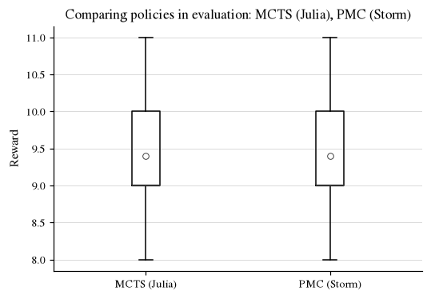

Workflow: External Tools (Julia)¶
One of the main goals of VeriGym is to allow integration between a variety of existing tools and frameworks.
In this workflow, we show off the intergration with one such external framework: the POMDPs.jl format used to define and solve (PO)MDPs in the Julia programming language.
What do we show here? In this workflow, we benchmark a standard RL algorithm against model checked ground-truth results with the following steps:
We construct an abstraction for the Gymnasium environment
Xand export it to UMB format.In
Julia, we import the model, solve it via an existing solver, and export a policy usingPRISMs action list format.We import the policy into VeriGym, and evaluate the policy on both the abstracted and original model.
Imports and helpers¶
# Imports
import gymnasium as gym
import os
import subprocess
import stormpy
# VeriGym
import verigym
from verigym.policy.randomized import RandomizedPolicy
from verigym.policy.qvalue import EntropyLearningPolicy
from verigym.io.exporter import export_to_umb, export_to_drn
from verigym.abstraction.abstractionmapper import AbstractionMapper, linspace_mapper
from verigym.frameworks.prism.prismpolicy import PrismPolicy
from verigym.frameworks.stormpy.stormpy_utils import build_stormpy_mdp
# Helpers
from workflow_utils import OUTPATH, run_eval_episodes, plot_compare_policy_eval
import plot_style
# Paths etc.
dir = "./working_directory/"
SUBPATH = "external_tools_files"
PLOT_PATH = f"{OUTPATH}/figures/{SUBPATH}"
os.makedirs(PLOT_PATH, exist_ok=True)
SEED = 1285821
1 - Construct and export abstraction¶
To start of, we pick an environment that we want to make an abstraction for. To keep things simple, we use the standard gym environment CartPole, and use a simple box discretization. For more details on how to construct and discretize models, see the other workflows.
gamma = 0.95 # discount factor
original_model = verigym.GenerativeEnv.from_gymnasium(gym.make("CartPole-v1"))
abstraction_mapper = linspace_mapper(
env=original_model,
n_bins_states=11,
n_bins_actions=1
)
abstracted_model = verigym.create_abstraction(
original_model,
abstraction_mapper,
exploration_policy=RandomizedPolicy(original_model, seed=SEED),
num_steps=int(5e5),
seed=SEED,
multithreading=False
)
/home/maris/tacas/VeriGym/.venv/lib/python3.12/site-packages/numpy/_core/function_base.py:163: RuntimeWarning: invalid value encountered in multiply
y *= step
/home/maris/tacas/VeriGym/.venv/lib/python3.12/site-packages/numpy/_core/function_base.py:173: RuntimeWarning: invalid value encountered in add
y += start
Next, to use any external tool, we need to be able to write our constructed model to a file. VeriGym makes use of existing stormpy functionality to supports writing to the following formats:
We chose DRN format, in which case exporting looks as follows:
export_to_umb(abstracted_model, dir + "model.umb")
export_to_drn(abstracted_model, dir + "model.drn")
/tmp/ipykernel_3499727/1548479165.py:1: UserWarning: The initial state distribution is not uniform over the initial states, but UMB files only store the set of initial states: loading the file assumes a uniform distribution over them.
export_to_umb(abstracted_model, dir + "model.umb")
/tmp/ipykernel_3499727/1548479165.py:2: UserWarning: The initial state distribution is not uniform over the initial states, but DRN files only store the set of initial states: loading the file assumes a uniform distribution over them.
export_to_drn(abstracted_model, dir + "model.drn")
2 - External Policy Computation¶
Since our model is now exported into a standard format, we can use external solvers to compute a policy. For this example, we use MCTS.jl, which is a Julia program that requires the model in POMDPs.jl format. VeriGym includes a number of Julia scripts that simplify this process. More precisely, this includes code to import and export MDPs in UMB format, and export policies in Prisms explicit action list format. Using this functionality, we can run a simple Julia script to compute and export a policy as follows:
using POMDPs
using MCTS
# Import our code
include("../src/verigym/external/julia/POMDPs_UMB.jl")
import .POMDPs_UMB
# Read the model
dir = "./working_directory/"
input, output = dir * "model.umb", dir * "policy.txt"
model = POMDPs_UMB.read_umb(input; discount=0.95)
# Solve using POMDPs.jl solver
solver = MCTSSolver()
planner = solve(solver, model)
# Export policy
policy = POMDPs_UMB.Explicit_policy(planner, model)
POMDPs_UMB.write_policy(output, policy)
println("Policy computation complete!")
The resulting policy file is already available, but can be re-computed by running the code below. Note that this requires you to have installed Julia, as well as the POMDPs and MCTS modules.
if True: # set to true to run:
subprocess.call(["julia", "./workflow_external_tools_script.jl", str(SEED)])
Policy computation complete! (In 3.1694211959838867s, achieving value 10.029263327056068
To use the computed policy, we use VeriGym’s functionality for importing policies in Prism format:
policy_path = "./working_directory/policy.txt"
julia_policy = PrismPolicy(policy_path=policy_path, abstraction_mapper=abstraction_mapper)
3 - Policy Evaluation¶
We can now use the imported policy the way we would any other policy. As an example, we here compare it’s performance agains that of a Stormpy policy:
stormpy_mdp = build_stormpy_mdp(abstracted_model)
prop = stormpy.parse_properties(f"Rmax=?[Cdiscount={gamma}]")[
0
] # checking for cumulative discounted reward
# Run the model checking:
result = stormpy.check_model_sparse(stormpy_mdp, prop, extract_scheduler=True)
stormpy_policy = verigym.StormpyPolicy(result.scheduler, abstracted_model.abstraction_map, stormpy_mdp)
jl_eval = run_eval_episodes(original_model, julia_policy)
sp_eval = run_eval_episodes(original_model, stormpy_policy)
plot_compare_policy_eval([jl_eval, sp_eval], ["MCTS (Julia)", "PMC (Storm)"],
path_output=f"{PLOT_PATH}/mcts_vs_model_checking.pdf")
/home/maris/tacas/VeriGym/examples/workflow_utils.py:370: UserWarning: The figure layout has changed to tight
plt.tight_layout()
